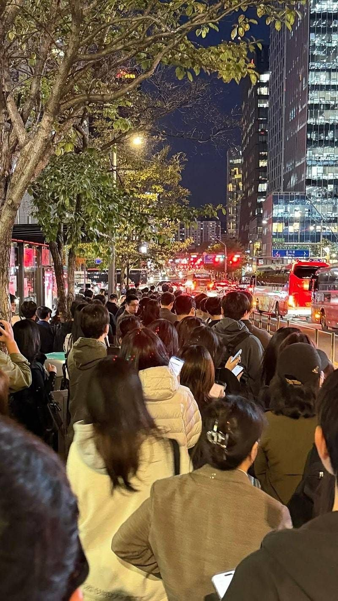
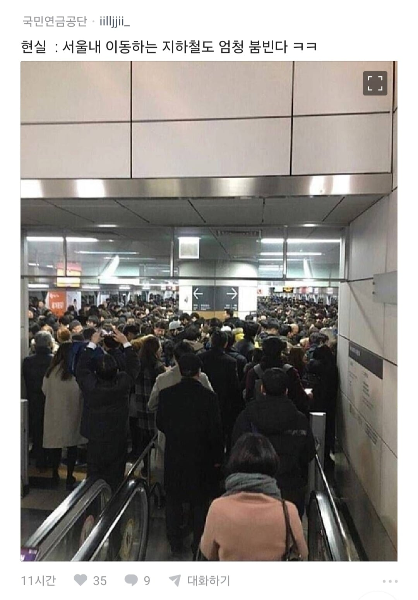

저논리면 지방이 최고아닌가 교통체증이 1도없는데 서울 10키로이동 1시간 지방 10키로이동 8분
지얼굴에 침뱉기같은디 저논리면 서울은 최악의도시임
지방중에서도 부사관이 최고지
지금이라도 서울집 사라
서울 마지막 내 집 마련이 가능한 중랑구로 오세요. 중랑구 좋음.
서울 살다가 안양으로 이사왔는데, 버스중앙차로 유무 차이가 진짜 크긴 크더라. 빨강버스 타고 다니는데 서울에선 버스가 거의 제시간에 왔는데, 여긴 겁나 들쑥날쑥하데.
이거 보고 일 관두고 쉬었음 하기로 했따
지방 광역시 살아보면 처음에는 왜 내가 여기까지 온거지.. 하다가 익숙해지니까 이런 꿀통이 없드라. 경쟁은 서울 및 수도권의 10분의 1인데, 그렇다고 인프라가 서울수도권의 10분의 1 수준은 아니니까. 아무튼 직장있으면 지방 광역시가 짱임. 부동산 투자만 서울 및 수도권에 하면 됨.
??????: 너 이 새끼 실거주 안 하는 투기꾼이구나 받아랏 과세빔
(신념으로 부들대며)
중견기업 이상 모두 서울에서 빼면 되겠네....서울 상주시 법인세 대폭 인상 하던가
음 ㅇㅋ. 수도권 안살게요 ㅋㅋㅋㅋㅋ저걸 어케버텨.... 부산에서 그냥 사는걸로
정보) 지하철이 더 헬이다
일자리를 지방으로 보내는게 아니라 대학교들을 지방으로 보내야 됨 그럼 일자리도 알아서 지방으로 따라간다 전국에 있는 머리 좋은 애들 죄다 서울로 몰리니깐 일자리도 서울에 몰릴 수 밖에 없음 예를 들어 충청도에 살던 머리 좋은애가 서울에 있는 대학 다녔으면 친한 사람들도 죄다 서울에 있고 잘 아는 곳들도 다 서울에 있는데 갑자기 뜬금 없이 경상도나 전라도에 일 자리를 구할리가 없지 1, 2순위가 서울, 고향일 수 밖에 없음
완전 반대의견은 아니지만... 그 우수한 학생들이 있던 포스텍과 카이스트도 하락 중 이야 ㅠ
두 학교는 선배들부터 시작해서 교수진도 완벽하고 지원금도 절대적인데도 힘들어해...
그리고, 이미 지스트 디지스트 유니스트라는 광역시에 과기원들도 포진하여 있음
대학을 보낼 필요는 없음 지방에도 대학은 차고 넘치니까
그냥 지방에서 우수한 학생이 자기 지역에 대학 갈 유인을 만들어야 됨
그래서 중요한 게 다시 일자리인 거고
지방으로 대학들 보내면 그 대학은 내려가고 서울에 남은 대학이 더 올라감 ㅋㅋ
이제 이 좆같은 시스템 아래에서 다같이 조롱하고 싸우는거야? ㅋㅋㅋㅋ 여윽시 배금주의는 국평
끔찍..지방에 차한대만있으면 도 단위로 출퇴근 가능한데
정신병 걸리는게 이해가네
저거 명동 성당 앞 을지로3가 쪽 아님? 저기서 버스 2년 동안 타고 다녔는데 사실 저긴 다닐만함. 버스가 잘 맞으면 지하철보다 좋음.
답은 7출 4퇴다
앉아서가기 씹가능
ㄹㅇ 유연근무제가 답임
서울 30년 살다가 지방 5년살고 다시 서울올라가니까 역체감 ㅈ됨.. 출퇴근시간에 공황 오더라.
그런다고 자동차 타면 2.7km를 43분 걸려서 이동하는 경우도 생김 ㅋㅋㅋㅋ
와 우리회사 보인당
회사에서 자면안됨?
뭐하러 출퇴근시간 고정해서 도로에서 인생 낭비시키는지 모르겠음... 노동청 차원에서 사무직들은 유연근무제 도입하라고 어느정도 압박 필요할 듯
7-4 8-5는 다닐만 함
9-6 10-7이 지옥임
차라리 저녁먹고 아예 밤9시 이후부터는 다닐만 함
무슨 소리... 밤 9시 넘어서까지 빽빽한 고속도로나 고속화도로 군데군데 많음
자차로 다녀? 그럼 편하지
궁금한게 그럼 서울나가라 하는데
물론 지방가도 난 내가 하는 직장이 있긴 함
그래서 알아봤더니 뭔 급여가 말도안되는 급여들인데
그걸 받으러 내려가란건지..
그거 받고 거기에 싼집살면된다인데 지방도 광역시나 그래도
도시같은곳은 가야되는거아녀 ..? 거긴 서울보단 싸지만 그렇다고
헐값 까진 아니던데..
결국 경기도에 집사서 강남출퇴근하는 삶을 선택하게됌..
지방광역시들 특징은 대장아파트랑 그 외 아파트 갭이 엄청 크다는 점임. 대장들은 수도권에 준하지만 조금만 옆으로 빠지면 준신축들 4억따리가 넘쳐남. 서울 수도권에서는 해당 가격대가 전무함.
ㄹㅇ 돈만 충분했으면 지방으로 적절히 퍼졌음
개새끼들이 어떻게든 인건비 아끼려고 돈을 안쓰니
어쩔수없이 서울로 올수밖에 없는거지
난 지방에서 살련다
오토바이가 진짜 댕꿀임
???: 회사를 지방으로 가면 되잖아
빨리 고향 내려가고싶다
일산에서 을지로 3호선 타고 다니는 게 꿀이였네
저 정도일 줄이야 ㄷㄷ